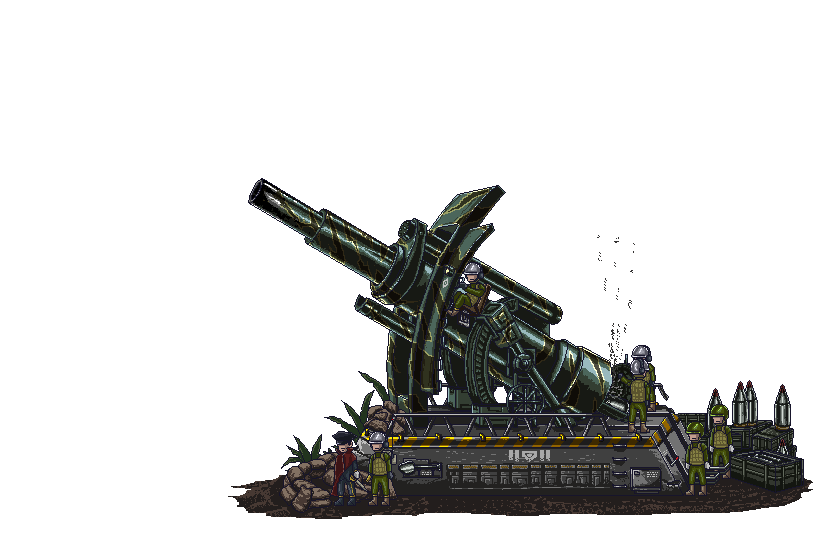

About My Grand Company
I have been collecting Warhammer 40k and Warhammer Fantasy Battles armies for...two decades? Yeah, at least two decades by now. My absolute favourites are the Iron Warriors. Not because they have an interesting background (it is okay, and sufficiently tragic), but because they, as much as I do, love BIG GUNS. Artillery, heavy tanks, heavy weapons squads, just overwhelming firepower all the way. Nothing brings me more joy than a stagnant battle line across which heavy guns fire at each other. Enjoy these grainy pictures of some of my favourites from my collection.
I also have other armies collected over the eons, but in all honestly.